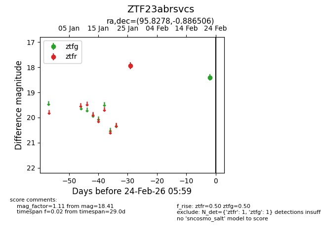
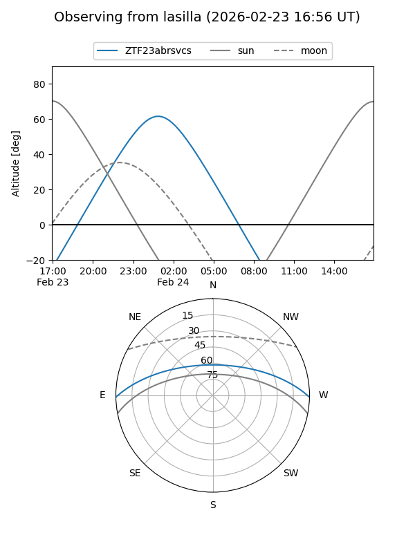
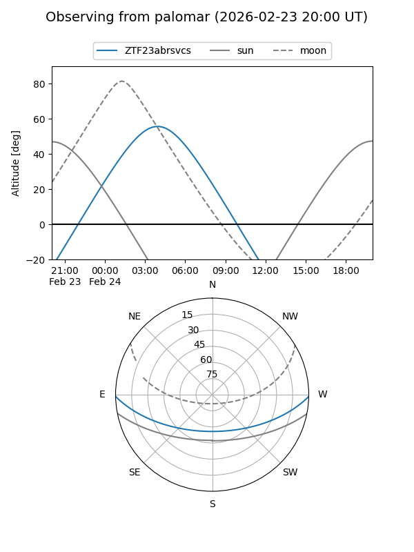

ZTF23abrsvcs
Target ZTF23abrsvcs at 2026-02-24 09:08
Aliases and brokers:
FINK: link
Lasair: link
ALeRCE: link
alt names
ZTF23abrsvcs (ztf,fink_ztf)
Coordinates:
equatorial (ra, dec) = 95.8278,-0.88651
equatorial (HMS+DMS) = 06:23:18.66,-00:53:11.42
galactic (l, b) = (210.5059,-6.66091)
Flags:
Photometry:
last ztfg=18.41, ztfr=17.94
1 ztfg, 1 ztfr detections
Lightcurve

Visibility


Additional plots